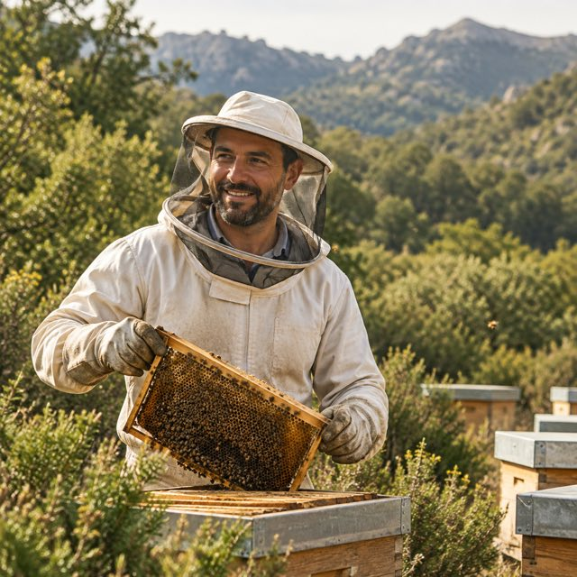

Huerto Los Álamos
Buitrago del Lozoya
Hortalizas, fruta y huevos
Conoce su historia
Fundado en 2009. Finca familiar de 6 hectáreas con riego por goteo y certificación ecológica en trámite.
NUESTRA COOPERATIVA
Cuatro productores, una cooperativa
de la Sierra Norte de Madrid.
Conoce a los productores de la Sierra Norte de Madrid que forman nuestra cooperativa.
Imágenes ilustrativas; no representan a los productores.
Buitrago del Lozoya
Hortalizas, fruta y huevos
Fundado en 2009. Finca familiar de 6 hectáreas con riego por goteo y certificación ecológica en trámite.

Lozoyuela
Quesos y yogures
Fundada en 2014. Rebaño de 120 cabras y 80 ovejas; elaboración artesanal con leche del día.

El Atazar
Miel
Fundado en 2011. Cuarenta colmenas trashumantes entre el romero de primavera y el brezo de verano.

Torrelaguna
Pan y repostería
Fundado en 2017. Horno de leña con masa madre propia y harinas de molino local.
Desde 2018, unimos el trabajo de cuatro productores de la Sierra Norte de Madrid para vender sin intermediarios.
En esta recreación imaginamos cómo cuatro productores de la Sierra Norte de Madrid decidieron unir sus oficios para acercar sus productos a las mesas sin intermediarios. Así nació Huerta Serrana en 2018.